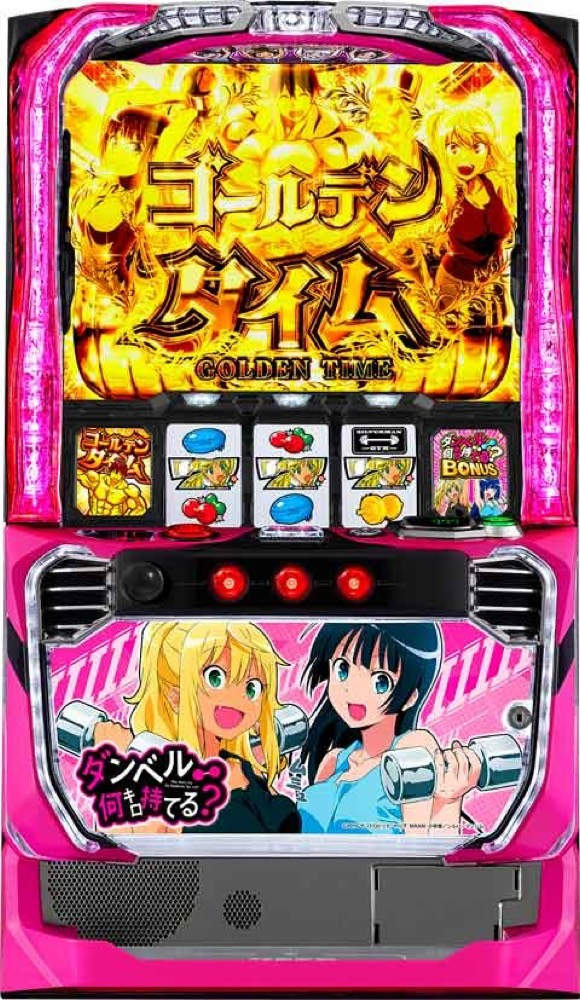

Lパチスロ ダンベル何キロ持てる？
MUSCLE ZONEを突破し、ゲーム数上乗せからVストックの上位ループへ。
- 導入
- 2024年12月
- メーカー
- SANKYO
- 分類
- パチスロ
主要スペック
設定別CZ・AT初当りを使い、10G＋αのMUSCLE ZONE、30G＋αの通常AT、ゴールデンチャレンジ、Vストック特化、差枚数型の金肉BONUSを実機順に体験できます。
- CZは10G＋α・成功期待度約40%
- 通常ATは30G＋α・純増約8.5枚/G
- 上位引き戻しは3G・成功期待度約56%
Lパチスロ ダンベル何キロ持てる？の見どころと計算条件
設定別CZ・AT初当りを使い、10G＋αのMUSCLE ZONE、30G＋αの通常AT、ゴールデンチャレンジ、Vストック特化、差枚数型の金肉BONUSを実機順に体験できます。
スマスロ ダンベルを数字で早分かり
MUSCLE ZONEからダンベル何キロ持てる？BONUS、金肉BONUSまでの流れと、設定ごとの結果差を固定レートで比較できます。
30秒で分かるスマスロ ダンベル
通常ATはゲーム数、上位ATは差枚数を上乗せする二段階型です。MUSCLE ZONE突破後に120G継続や上位CZを通し、平均約4個のVストックから金肉BONUSを伸ばします。
こんな遊び方に向いている
- CZの発展先ごとの期待度を見たい
- 通常ATのゲーム数上乗せをPUSHで体験したい
- 上位のVストックと差枚数ループを比べたい
遊ぶ前に確認したいこと
- 通常AT30G＋αと上位の差枚数管理を別表示
- ゴールデンチャレンジ・引き戻しは各約56%
- Vストックの細かな振り分けは代表値
摂取カロリーとMUSCLE ZONE
通常時は摂取カロリー、100Gごとの神社ステージ、強レア役などからMUSCLE ZONEを目指します。CZは10G＋αの前半・後半構成で、トータル成功期待度は約40%です。
後半はアームレスリング約42%、筋肉道約55%、マッスルプッシュ約85%。シミュレーターでも発展先を表示し、最後のPUSHでAT当落を開きます。
30G＋αのダンベルBONUS
通常ATは純増約8.5枚/Gのゲーム数上乗せ型。初期30Gから、レア役や2択のレア役チャンスで＋20G以上の上乗せを狙います。
上乗せゲーム数はPUSHまで伏せ、残りゲーム数を減らしながら表示します。120G継続時はゴールデンチャレンジの権利獲得濃厚として扱います。
ゴールデンチャレンジとVストック
通常AT終了後に権利を持っていれば、3G・成功期待度約56%のゴールデンチャレンジへ。成功すると5Gのゴールデンタイムで毎ゲームVストックを抽選します。
平均Vストックは約4個で、1個につき100枚以上。PUSHでストック個数と各ストックの差枚数を順番に開きます。
金肉BONUSと上位ループ
金肉BONUSは純増約8.5枚/Gの差枚数管理型で、平均獲得枚数は約1070枚。通常ATのゲーム数上乗せとは分け、残り枚数と差枚数上乗せを表示します。
終了後は3Gのライジングアッパーチャレンジへ。成功期待度約56%でゴールデンタイムへ戻り、Vストックと金肉BONUSをループします。
固定レートと簡易化する範囲
- 約32.5G/50枚・1,000円46枚貸し・5.2枚交換で固定
- 通常時の全カロリー・天井・内部状態は代表抽選へ簡略化
- ゲーム数・Vストック差枚の非公表振り分けは体験用代表値
- 19,000枚到達時はコンプリート表示
平均Gと投資目安の計算
掲載するダンベル何キロ持てる？BONUS初当り約1/591は設定1基準です。当サイトでは50枚あたり32.5G、1,000円46枚貸しの固定条件から、設定1基準の平均投資目安を約19,800円と計算します。
シミュレーターでは設定1〜6を均等抽選します。設定1〜6で公開されている初当り値を個別に使います。公開されていない特化ゾーン・上位到達率の設定差は加えません。 換金は5.2枚交換で固定し、結果とランキングに設定を表示します。
シミュレーション結果の見方
当るまでMUSCLE ZONE・ダンベル何キロ持てる？BONUSまでのゲーム数
設定設定1・2・3・4・5・6から抽選された今回の設定
上位到達ゴールデンチャレンジと金肉BONUSへの到達
最終収支差枚と5.2枚交換の収支目安
結果は自動で「マイ記録」に保存され、同じ機種を何回試したか、最高収支、勝率をあとから確認できます。
簡易シミュレーターについて
MUSCLE ZONE・ダンベル何キロ持てる？BONUS・金肉BONUSの流れを固定条件で体験できます。JavaScriptを有効にすると、この位置にシミュレーター、演出、マイ記録、機種別ランキングが表示されます。
結果は娯楽・確率理解のための参考表示です。金銭的価値や交換価値はなく、実際の勝敗や収支を保証しません。18歳未満の方の利用はお控えください。
スマスロ ダンベルのよくある質問
スマスロ ダンベルはどんな台？
設定別CZ・AT初当りを使い、10G＋αのMUSCLE ZONE、30G＋αの通常AT、ゴールデンチャレンジ、Vストック特化、差枚数型の金肉BONUSを実機順に体験できます。 CZは10G＋α・成功期待度約40%が主な確認ポイントです。
スマスロ ダンベルの平均投資目安は？
設定1基準のダンベル何キロ持てる？BONUS初当り約1/591と、50枚あたり32.5G・46枚貸しの固定条件から、平均19,800円を目安として表示します。実際の設定や遊技状況で結果は変わります。
設定とゲームの流れはどう抽選する？
開始時に設定1・2・3・4・5・6から1つを均等抽選し、MUSCLE ZONE、ダンベル何キロ持てる？BONUS、ゴールデンチャレンジ、金肉BONUSの順で到達を判定します。設定は最終結果とランキングに表示します。
収支はどう計算する？
1,000円46枚貸し・5.2枚交換の固定条件で投資、換金、収支目安を計算します。実店舗の再プレイ、持ちメダル、端数処理は含みません。